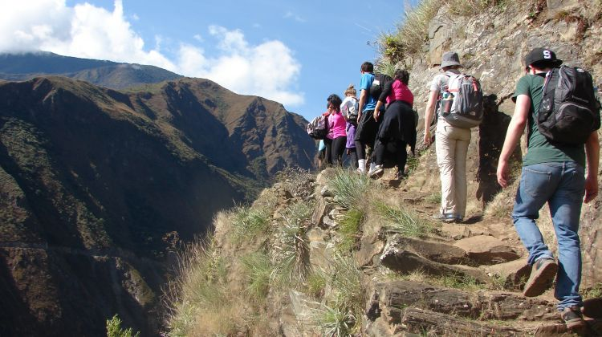

I am looking forward to going to Machu Picchu because it looks like I would really feel like I am going back in time and visiting a place and a time that I could not even imagine. This trip is one that does not yet have a date or time, but I do plan to go one day.
Most archaeologists believe that Machu Picchu was constructed as an estate for the Inca emperor Pachacuti (1438–1472). Often mistakenly referred to as the "Lost City of the Incas" (a title more accurately applied to Vilcabamba), it is the most familiar icon of Inca civilization. The Incas built the estate around 1450 but abandoned it a century later at the time of the Spanish Conquest. Although known locally, it was not known to the Spanish during the colonial period and remained unknown to the outside world until American historian Hiram Bingham brought it to international attention in 1911.
Travel to Peru to retrace the steps of the Inca, Peru's fascinating ancient civilisation. Follow the Inca from Cusco, through the fertile heartland of the Sacred Valley and to the magnificent Ollantaytambo ruins before the ultimate adventure – trekking to Machu Picchu. This action-filled express Peruvian tour gets you closer to the secrets of this elusive civilisation on a breathtaking adventure along the Inca Trail.
I will make sure to pack: